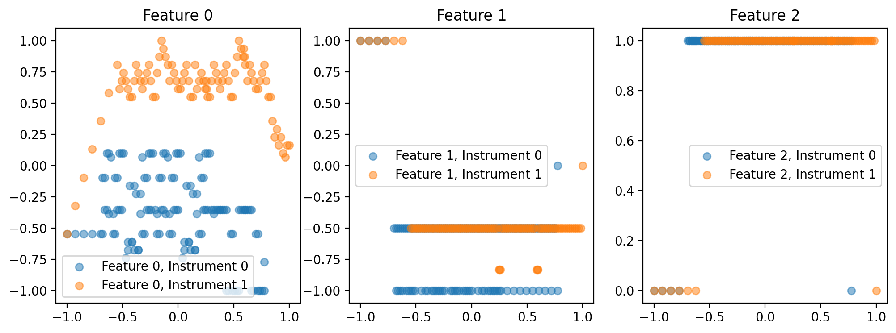
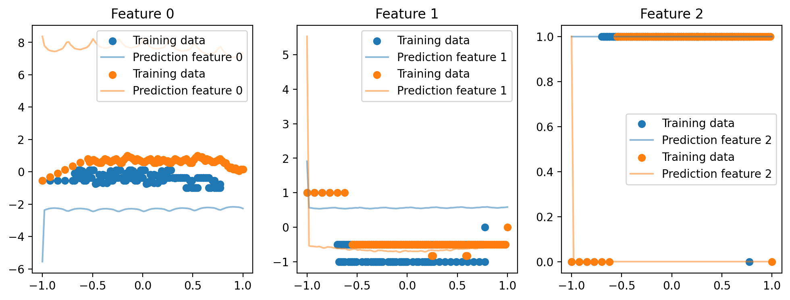
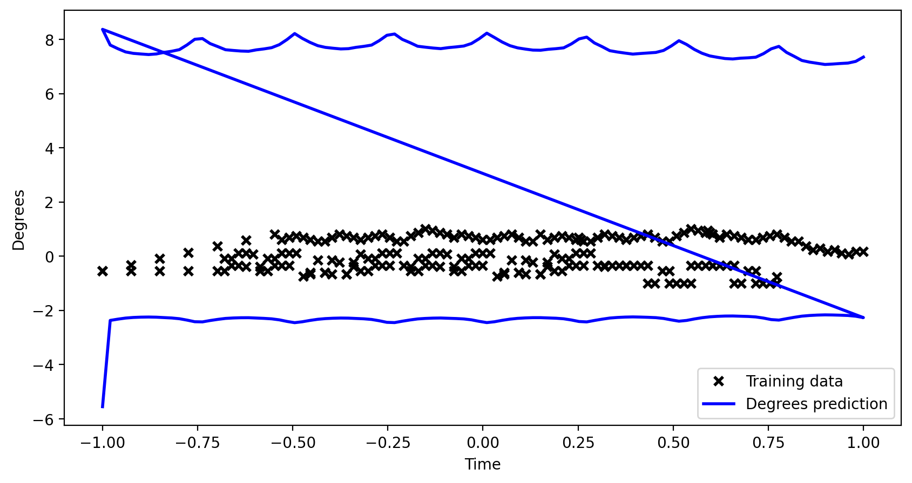
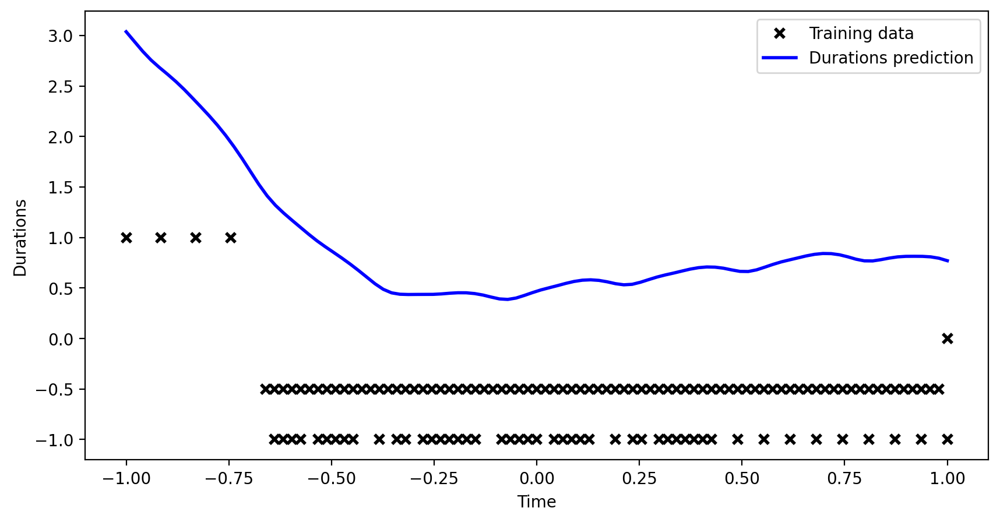

[3]:
import scamp
WARNING:root:python-rtmidi was not found; streaming midi input / output will not be available.
WARNING:root:pynput was not found; mouse and keyboard input will not be available.
[4]:
s = scamp.Session()
clarinet = s.new_part('clarinet')
Using preset Clarinet for clarinet
[5]:
a = b = 1
for _ in range(10):
clarinet.play_note(64+a, 0.7, 0.25)
a, b = b, (a+b) % 6
[9]:
import os
import json
import numpy as np
import random
import glob
import music21 as m21
import djalgo as dj
import tensorflow as tf
import gpflow
def scan_midi_files(directory, max_files=None):
"""
Scans the specified directory for MIDI files using glob with a while loop.
Args:
directory (str): The directory to scan for MIDI files.
max_files (int, optional): The maximum number of files to scan. If None, all files are scanned.
Returns:
list: The list of MIDI files found.
"""
search_pattern = os.path.join(directory, '**', '*.mid*')
midi_files = []
# Utiliser glob.iglob pour obtenir un itérateur
for file in glob.iglob(search_pattern, recursive=True):
midi_files.append(file)
if max_files is not None and len(midi_files) >= max_files:
break
return midi_files
2024-05-02 11:06:21.588468: I external/local_tsl/tsl/cuda/cudart_stub.cc:32] Could not find cuda drivers on your machine, GPU will not be used.
2024-05-02 11:06:21.592514: I external/local_tsl/tsl/cuda/cudart_stub.cc:32] Could not find cuda drivers on your machine, GPU will not be used.
2024-05-02 11:06:21.635266: I tensorflow/core/platform/cpu_feature_guard.cc:210] This TensorFlow binary is optimized to use available CPU instructions in performance-critical operations.
To enable the following instructions: AVX2 FMA, in other operations, rebuild TensorFlow with the appropriate compiler flags.
2024-05-02 11:06:22.738453: W tensorflow/compiler/tf2tensorrt/utils/py_utils.cc:38] TF-TRT Warning: Could not find TensorRT
[10]:
midi_files = scan_midi_files('_midi')
[11]:
import mido
from mido import MidiFile, MidiTrack
def repair_midi(input_path, output_path, split_channels=False, change_instruments=None):
"""
Repairs a MIDI file by splitting or merging tracks and optionally changing instruments.
Args:
input_path (str): Path to the input MIDI file.
output_path (str): Path to save the repaired MIDI file.
split_channels (bool): If True, splits tracks into separate tracks based on channel.
change_instruments (dict): Optional dictionary mapping from channel to new instrument program number.
"""
mid = MidiFile(input_path)
new_mid = MidiFile()
if split_channels:
# Create a track for each channel (0-15)
tracks_per_channel = [MidiTrack() for _ in range(16)]
# Distribute messages to appropriate track based on channel
for track in mid.tracks:
for msg in track:
if not msg.is_meta and hasattr(msg, 'channel'):
if change_instruments and msg.type == 'program_change' and msg.channel in change_instruments:
msg.program = change_instruments[msg.channel]
tracks_per_channel[msg.channel].append(msg)
else:
# Append meta messages to all tracks
[t.append(msg) for t in tracks_per_channel]
# Add non-empty tracks to the new MIDI file
for track in tracks_per_channel:
if any(not msg.is_meta for msg in track): # Ensuring the track is not empty
new_mid.tracks.append(track)
else:
# Merge all tracks into one or keep as is, based on the MIDI file's structure
combined_track = MidiTrack()
for track in mid.tracks:
for msg in track:
if change_instruments and msg.type == 'program_change' and msg.channel in change_instruments:
msg.program = change_instruments[msg.channel]
combined_track.append(msg)
new_mid.tracks.append(combined_track)
# Save the repaired MIDI file
new_mid.save(output_path)
# Example usage:
for file in midi_files:
repair_midi(file, file.replace('_midi/', '_midi-repaired/'), split_channels=True)
[12]:
midi_files = scan_midi_files('_midi-repaired')
[13]:
import numpy as np
import music21 as m21
def replace_none_with_weighted_value(data):
# Copy data to avoid modifying the original array directly
modified_data = np.array(data, dtype=object)
for i in range(len(modified_data)):
if modified_data[i] is None:
nearest_prev = nearest_next = None
dist_prev = dist_next = float('inf')
for j in range(i - 1, -1, -1):
if modified_data[j] is not None:
nearest_prev = modified_data[j]
dist_prev = i - j
break
for k in range(i + 1, len(modified_data)):
if modified_data[k] is not None:
nearest_next = modified_data[k]
dist_next = k - i
break
if nearest_prev is not None and nearest_next is not None:
total_weight = 1 / dist_prev + 1 / dist_next
weighted_value = (nearest_prev * (1 / dist_prev) + nearest_next * (1 / dist_next)) / total_weight
elif nearest_prev is not None:
weighted_value = nearest_prev
elif nearest_next is not None:
weighted_value = nearest_next
else:
weighted_value = 0 # Default or handle as needed
modified_data[i] = weighted_value
return modified_data
def prepare_data_for_gpflow(midi_files, num_instruments=2):
features = [] # Will hold the input features
targets = [] # Will hold the targets with instrument index
for midi_file in midi_files:
score = m21.converter.parse(midi_file)
parts = score.getElementsByClass(m21.stream.Part)
for idx, part in enumerate(parts[:num_instruments]):
key = part.analyze('key')
scale_list = dj.harmony.Scale(key.tonic.name, key.mode).generate()
for element in part.flatten().notesAndRests:
offset = float(element.offset)
duration = float(element.duration.quarterLength)
activity = 0 if isinstance(element, m21.note.Rest) else 1
if isinstance(element, m21.note.Note):
pitch = element.pitch.midi
elif isinstance(element, m21.chord.Chord):
pitch = element.pitches[0].midi
else:
pitch = None
degree = dj.utils.get_degree_from_pitch(pitch, scale_list=scale_list, tonic_pitch=key.tonic.midi) if pitch is not None else None
if num_instruments < 2:
features.append([offset]) # Features (time offset)
else:
features.append([offset, idx]) # Features (time offset)
# Concatenating instrument index with each target
targets.append([degree, duration, activity])
# Replace None values in degrees with a weighted average of the nearest non-None values
all_degrees = [t[0] for t in targets]
all_degrees_noNone = replace_none_with_weighted_value(all_degrees)
targets = [[all_degrees_noNone[i], t[1], t[2]] for i, t in enumerate(targets)]
X = np.array(features).astype(np.float64)
Y = np.array(targets).astype(np.float64)
return X, Y
def scaling(x):
mean = np.mean(x, axis=0)
std = np.std(x, axis=0)
return (x - mean) / std, mean, std
def minmax_scaling(data, min_range=-1, max_range=1):
min_vals = np.min(data, axis=0)
max_vals = np.max(data, axis=0)
scaled_data = (data - min_vals) / (max_vals - min_vals) * (max_range - min_range) + min_range
return scaled_data, min_vals, max_vals
[56]:
midi_files = scan_midi_files('_midi-repaired')
midi_files = [midi_files[4]]
print(midi_files)
num_instruments=2
X, Y = prepare_data_for_gpflow(midi_files, num_instruments=num_instruments)
['_midi-repaired/tetris.mid']
[57]:
Y_sc = Y.copy()
Y_sc[:, :2], min_Y, max_y = minmax_scaling(Y[:, :2])
X_sc = X.copy()
X_sc[:, 0], min_X, max_X = minmax_scaling(X[:, 0])
[58]:
import matplotlib.pyplot as plt
if num_instruments < 2:
fig, ax = plt.subplots(1, 2, figsize=(12, 4))
for i in range(3):
ax[i].scatter(X_sc[:, 0], Y_sc[:, i], label=f'Feature {i}', alpha=0.5)
ax[i].set_title(f'Feature {i}')
ax[i].legend()
else:
fig, ax = plt.subplots(1, 3, figsize=(12, 4))
for i in range(3):
for j in range(2):
filter_instr = X[:, 1] == j
ax[i].scatter(X_sc[filter_instr, 0], Y_sc[filter_instr, i], label=f'Feature {i}, Instrument {j}', alpha=0.5)
ax[i].set_title(f'Feature {i}')
ax[i].legend()

[59]:
gpflow.config.set_default_jitter(1e-6)
matern_kernel = gpflow.kernels.Matern32(lengthscales=1.0, variance=10.0) # Increased variance
periodic_kernel_short = gpflow.kernels.Periodic(
base_kernel=gpflow.kernels.Matern32(lengthscales=1.0, variance=1.0), # Increase base kernel variance
period=0.001
)
periodic_kernel_long = gpflow.kernels.Periodic(
base_kernel=gpflow.kernels.Matern32(lengthscales=1.0, variance=1.0), # Increase base kernel variance
period=0.5
)
# Combine kernels
complex_kernel = gpflow.kernels.Sum([matern_kernel, periodic_kernel_short, periodic_kernel_long])
if num_instruments < 2:
num_outputs = 1 # Single output for a single instrument
kernel_degrees = complex_kernel
kernel_durations = complex_kernel
else:
num_outputs = int(np.max(X_sc[:, 1]) + 1) # Assuming column 1 is the index of instruments
# Coregionalization kernel setup
coreg_kernel = gpflow.kernels.Coregion(output_dim=num_outputs, rank=num_outputs, active_dims=[1])
coreg_kernel.W.assign(np.random.rand(num_outputs, num_outputs))
kernel_degrees = complex_kernel * coreg_kernel
kernel_durations = complex_kernel * coreg_kernel
kernel_activities = complex_kernel * coreg_kernel
# Setup the GP models for each output
# Use X_sc which contains the scaled features including time and instrument index
model_degrees = gpflow.models.VGP(data=(X_sc, Y[:, 0:1]), kernel=kernel_degrees, likelihood=gpflow.likelihoods.Gaussian())
model_durations = gpflow.models.VGP(data=(X_sc, Y[:, 1:2]), kernel=kernel_durations, likelihood=gpflow.likelihoods.Gaussian())
if num_instruments >= 2:
model_activities = gpflow.models.VGP(data=(X_sc, Y[:, 2:3]), kernel=kernel_activities, likelihood=gpflow.likelihoods.Bernoulli())
# Define training data for each model using the appropriate columns from Y
training_data_degrees = (X_sc, Y_sc[:, 0:1]) # First column of Y for degrees
training_data_durations = (X_sc, Y_sc[:, 1:2]) # Second column of Y for durations
if num_instruments >= 2:
training_data_activities = (X_sc, Y_sc[:, 2:3]) # Third column of Y for activities
# Optimization using GPflow's built-in optimizer for each model
optimizer = gpflow.optimizers.Scipy()
print('Fitting degrees model...')
optimizer.minimize(model_degrees.training_loss_closure(),
variables=model_degrees.trainable_variables,
options=dict(maxiter=1000))
print('Fitting durations model...')
optimizer.minimize(model_durations.training_loss_closure(),
variables=model_durations.trainable_variables,
options=dict(maxiter=1000))
if num_instruments >= 2:
print('Fitting activities model...')
optimizer.minimize(model_activities.training_loss_closure(),
variables=model_activities.trainable_variables,
options=dict(maxiter=1000))
Fitting degrees model...
2024-05-02 11:14:49.329811: W tensorflow/core/kernels/linalg/cholesky_op.cc:56] Cholesky decomposition was not successful. Eigen::LLT failed with error code 1. Filling lower-triangular output with NaNs.
2024-05-02 11:14:49.348457: W tensorflow/core/kernels/linalg/cholesky_op.cc:56] Cholesky decomposition was not successful. Eigen::LLT failed with error code 1. Filling lower-triangular output with NaNs.
2024-05-02 11:14:49.368820: W tensorflow/core/kernels/linalg/cholesky_op.cc:56] Cholesky decomposition was not successful. Eigen::LLT failed with error code 1. Filling lower-triangular output with NaNs.
2024-05-02 11:14:49.391460: W tensorflow/core/kernels/linalg/cholesky_op.cc:56] Cholesky decomposition was not successful. Eigen::LLT failed with error code 1. Filling lower-triangular output with NaNs.
2024-05-02 11:14:49.413135: W tensorflow/core/kernels/linalg/cholesky_op.cc:56] Cholesky decomposition was not successful. Eigen::LLT failed with error code 1. Filling lower-triangular output with NaNs.
Fitting durations model...
2024-05-02 11:14:51.408610: W tensorflow/core/kernels/linalg/cholesky_op.cc:56] Cholesky decomposition was not successful. Eigen::LLT failed with error code 1. Filling lower-triangular output with NaNs.
2024-05-02 11:14:51.442271: W tensorflow/core/kernels/linalg/cholesky_op.cc:56] Cholesky decomposition was not successful. Eigen::LLT failed with error code 1. Filling lower-triangular output with NaNs.
2024-05-02 11:14:51.459431: W tensorflow/core/kernels/linalg/cholesky_op.cc:56] Cholesky decomposition was not successful. Eigen::LLT failed with error code 1. Filling lower-triangular output with NaNs.
2024-05-02 11:14:51.476941: W tensorflow/core/kernels/linalg/cholesky_op.cc:56] Cholesky decomposition was not successful. Eigen::LLT failed with error code 1. Filling lower-triangular output with NaNs.
Fitting activities model...
2024-05-02 11:14:53.462665: W tensorflow/core/kernels/linalg/cholesky_op.cc:56] Cholesky decomposition was not successful. Eigen::LLT failed with error code 1. Filling lower-triangular output with NaNs.
2024-05-02 11:14:53.482666: W tensorflow/core/kernels/linalg/cholesky_op.cc:56] Cholesky decomposition was not successful. Eigen::LLT failed with error code 1. Filling lower-triangular output with NaNs.
2024-05-02 11:14:53.499449: W tensorflow/core/kernels/linalg/cholesky_op.cc:56] Cholesky decomposition was not successful. Eigen::LLT failed with error code 1. Filling lower-triangular output with NaNs.
[60]:
n_values = 100
values = np.linspace(-1, 1, n_values)
if num_instruments < 2:
X_new = values[:, None]
else:
X_new_instruments = []
for i in range(num_instruments):
X_new_instruments.append(np.column_stack((values, np.ones(n_values) * i)))
X_new = np.vstack(X_new_instruments)
[61]:
X_new
[61]:
array([[-1. , 0. ],
[-0.97979798, 0. ],
[-0.95959596, 0. ],
[-0.93939394, 0. ],
[-0.91919192, 0. ],
[-0.8989899 , 0. ],
[-0.87878788, 0. ],
[-0.85858586, 0. ],
[-0.83838384, 0. ],
[-0.81818182, 0. ],
[-0.7979798 , 0. ],
[-0.77777778, 0. ],
[-0.75757576, 0. ],
[-0.73737374, 0. ],
[-0.71717172, 0. ],
[-0.6969697 , 0. ],
[-0.67676768, 0. ],
[-0.65656566, 0. ],
[-0.63636364, 0. ],
[-0.61616162, 0. ],
[-0.5959596 , 0. ],
[-0.57575758, 0. ],
[-0.55555556, 0. ],
[-0.53535354, 0. ],
[-0.51515152, 0. ],
[-0.49494949, 0. ],
[-0.47474747, 0. ],
[-0.45454545, 0. ],
[-0.43434343, 0. ],
[-0.41414141, 0. ],
[-0.39393939, 0. ],
[-0.37373737, 0. ],
[-0.35353535, 0. ],
[-0.33333333, 0. ],
[-0.31313131, 0. ],
[-0.29292929, 0. ],
[-0.27272727, 0. ],
[-0.25252525, 0. ],
[-0.23232323, 0. ],
[-0.21212121, 0. ],
[-0.19191919, 0. ],
[-0.17171717, 0. ],
[-0.15151515, 0. ],
[-0.13131313, 0. ],
[-0.11111111, 0. ],
[-0.09090909, 0. ],
[-0.07070707, 0. ],
[-0.05050505, 0. ],
[-0.03030303, 0. ],
[-0.01010101, 0. ],
[ 0.01010101, 0. ],
[ 0.03030303, 0. ],
[ 0.05050505, 0. ],
[ 0.07070707, 0. ],
[ 0.09090909, 0. ],
[ 0.11111111, 0. ],
[ 0.13131313, 0. ],
[ 0.15151515, 0. ],
[ 0.17171717, 0. ],
[ 0.19191919, 0. ],
[ 0.21212121, 0. ],
[ 0.23232323, 0. ],
[ 0.25252525, 0. ],
[ 0.27272727, 0. ],
[ 0.29292929, 0. ],
[ 0.31313131, 0. ],
[ 0.33333333, 0. ],
[ 0.35353535, 0. ],
[ 0.37373737, 0. ],
[ 0.39393939, 0. ],
[ 0.41414141, 0. ],
[ 0.43434343, 0. ],
[ 0.45454545, 0. ],
[ 0.47474747, 0. ],
[ 0.49494949, 0. ],
[ 0.51515152, 0. ],
[ 0.53535354, 0. ],
[ 0.55555556, 0. ],
[ 0.57575758, 0. ],
[ 0.5959596 , 0. ],
[ 0.61616162, 0. ],
[ 0.63636364, 0. ],
[ 0.65656566, 0. ],
[ 0.67676768, 0. ],
[ 0.6969697 , 0. ],
[ 0.71717172, 0. ],
[ 0.73737374, 0. ],
[ 0.75757576, 0. ],
[ 0.77777778, 0. ],
[ 0.7979798 , 0. ],
[ 0.81818182, 0. ],
[ 0.83838384, 0. ],
[ 0.85858586, 0. ],
[ 0.87878788, 0. ],
[ 0.8989899 , 0. ],
[ 0.91919192, 0. ],
[ 0.93939394, 0. ],
[ 0.95959596, 0. ],
[ 0.97979798, 0. ],
[ 1. , 0. ],
[-1. , 1. ],
[-0.97979798, 1. ],
[-0.95959596, 1. ],
[-0.93939394, 1. ],
[-0.91919192, 1. ],
[-0.8989899 , 1. ],
[-0.87878788, 1. ],
[-0.85858586, 1. ],
[-0.83838384, 1. ],
[-0.81818182, 1. ],
[-0.7979798 , 1. ],
[-0.77777778, 1. ],
[-0.75757576, 1. ],
[-0.73737374, 1. ],
[-0.71717172, 1. ],
[-0.6969697 , 1. ],
[-0.67676768, 1. ],
[-0.65656566, 1. ],
[-0.63636364, 1. ],
[-0.61616162, 1. ],
[-0.5959596 , 1. ],
[-0.57575758, 1. ],
[-0.55555556, 1. ],
[-0.53535354, 1. ],
[-0.51515152, 1. ],
[-0.49494949, 1. ],
[-0.47474747, 1. ],
[-0.45454545, 1. ],
[-0.43434343, 1. ],
[-0.41414141, 1. ],
[-0.39393939, 1. ],
[-0.37373737, 1. ],
[-0.35353535, 1. ],
[-0.33333333, 1. ],
[-0.31313131, 1. ],
[-0.29292929, 1. ],
[-0.27272727, 1. ],
[-0.25252525, 1. ],
[-0.23232323, 1. ],
[-0.21212121, 1. ],
[-0.19191919, 1. ],
[-0.17171717, 1. ],
[-0.15151515, 1. ],
[-0.13131313, 1. ],
[-0.11111111, 1. ],
[-0.09090909, 1. ],
[-0.07070707, 1. ],
[-0.05050505, 1. ],
[-0.03030303, 1. ],
[-0.01010101, 1. ],
[ 0.01010101, 1. ],
[ 0.03030303, 1. ],
[ 0.05050505, 1. ],
[ 0.07070707, 1. ],
[ 0.09090909, 1. ],
[ 0.11111111, 1. ],
[ 0.13131313, 1. ],
[ 0.15151515, 1. ],
[ 0.17171717, 1. ],
[ 0.19191919, 1. ],
[ 0.21212121, 1. ],
[ 0.23232323, 1. ],
[ 0.25252525, 1. ],
[ 0.27272727, 1. ],
[ 0.29292929, 1. ],
[ 0.31313131, 1. ],
[ 0.33333333, 1. ],
[ 0.35353535, 1. ],
[ 0.37373737, 1. ],
[ 0.39393939, 1. ],
[ 0.41414141, 1. ],
[ 0.43434343, 1. ],
[ 0.45454545, 1. ],
[ 0.47474747, 1. ],
[ 0.49494949, 1. ],
[ 0.51515152, 1. ],
[ 0.53535354, 1. ],
[ 0.55555556, 1. ],
[ 0.57575758, 1. ],
[ 0.5959596 , 1. ],
[ 0.61616162, 1. ],
[ 0.63636364, 1. ],
[ 0.65656566, 1. ],
[ 0.67676768, 1. ],
[ 0.6969697 , 1. ],
[ 0.71717172, 1. ],
[ 0.73737374, 1. ],
[ 0.75757576, 1. ],
[ 0.77777778, 1. ],
[ 0.7979798 , 1. ],
[ 0.81818182, 1. ],
[ 0.83838384, 1. ],
[ 0.85858586, 1. ],
[ 0.87878788, 1. ],
[ 0.8989899 , 1. ],
[ 0.91919192, 1. ],
[ 0.93939394, 1. ],
[ 0.95959596, 1. ],
[ 0.97979798, 1. ],
[ 1. , 1. ]])
[65]:
predictions = []
degrees_sc, _ = model_degrees.predict_y(X_new)
durations_sc, _ = model_durations.predict_y(X_new)
predictions.append(degrees_sc)
predictions.append(durations_sc)
if num_instruments >= 2:
activities = tf.sigmoid(model_activities.predict_f_samples(X_new, 1))
instrument_01 = tf.round(activities)
predictions.append(instrument_01)
[73]:
import matplotlib.pyplot as plt
if num_instruments < 2:
fig, ax = plt.subplots(1, 2, figsize=(12, 4))
for i in range(3):
ax[i].scatter(X_sc[:, 0], Y_sc[:, i], label='Training data')
ax[i].plot(X_new[:, 0], predictions[i].numpy().flatten(), label=f'Prediction feature {i}', alpha=0.5)
ax[i].set_title(f'Feature {i}')
ax[i].legend()
else:
fig, ax = plt.subplots(1, 3, figsize=(12, 4))
for i in range(3):
for j in range(num_instruments):
filter_instr_tr = X_sc[:, 1] == j
filter_instr_pr = X_new[:, 1] == j
ax[i].scatter(X_sc[filter_instr_tr, 0], Y_sc[filter_instr_tr, i], label='Training data')
ax[i].plot(X_new[filter_instr_pr, 0], predictions[i].numpy().flatten()[filter_instr_pr], label=f'Prediction feature {i}', alpha=0.5)
ax[i].set_title(f'Feature {i}')
ax[i].legend()

[63]:
import matplotlib.pyplot as plt
plt.figure(figsize=(10, 5))
plt.plot(X_sc[:, 0], Y_sc[:, 0], 'kx', mew=2, label='Training data')
plt.plot(X_new[:, 0], degrees_sc.numpy().flatten(), 'b', lw=2, label='Degrees prediction')
plt.xlabel('Time')
plt.ylabel('Degrees')
plt.legend()
[63]:
<matplotlib.legend.Legend at 0x7f40c3f2ebd0>

[55]:
import matplotlib.pyplot as plt
plt.figure(figsize=(10, 5))
plt.plot(X_sc[:, 0], Y_sc[:, 1], 'kx', mew=2, label='Training data')
plt.plot(X_new[:, 0], durations_sc.numpy().flatten(), 'b', lw=2, label='Durations prediction')
plt.xlabel('Time')
plt.ylabel('Durations')
plt.legend()
[55]:
<matplotlib.legend.Legend at 0x7f40aabcb650>

[ ]: